정보통신산업기사 (2014-05-31 기출문제)
1과목: 디지털전자회로
1. 전원공급기를 처음 켰을 때 발생할 수 있는 서지전류로 인하여 발생되는 손상은 어떤 방법으로 막는 것이 바람직한가?
- 여러 개의 다이오드를 병렬로 연결하고 이들 각 다이오드와 직렬로 낮은 값의 저항을 연결한다.
- 여러 개의 다이오드를 직렬로 연결한다.
- 여러 개의 다이오드를 직렬로 연결하고 마지막 다이오드에 낮은 값의 캐패시터를 연결한다.
- 변압기의 1차측에 퓨즈를 직렬로 연결한다.
(정답률: 80%)

2. 다음 중 전원 정류회로의 리플 함유율을 적게 하는 방법으로 틀린 것은?
- 출력측 평활형 콘덴서의 정전용량을 작게 한다.
- 평활형 초크 코일의 인덕턴스를 크게 한다.
- 입력측 평활용 콘덴서의 정전용량을 크게 한다.
- 교류입력전원의 주파수를 높게 한다.
(정답률: 70%)
3. 다음 중 다이오드를 사용한 정류회로에 대한 설명으로 틀린 것은?
- 평활형 초크 코일의 삽입장소에 따라 험(Hum)을 작게 할 수 있다.
- 다이오드 내부저항이 클수록 전압변동률이 나빠진다.
- 3상 반파정류회로의 경우 출력측에 전원주파수의 3배 주파수가 나타난다.
- 부하 임피던스가 낮을수록 리플함유율이 작아진다.
(정답률: 64%)
4. 다음 그림의 회로는 두 개의 비반전 증폭기를 종속 접속한 것이다. 저항 10[kΩ]에 흐르는 전류 Io는 몇 [μA]인가? (단, 각 연산 증폭기는 이상적이다.)
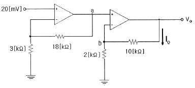
- 25[μA]
- 50[μA]
- 70[μA]
- 120[μA]
(정답률: 62%)
5. 이미터접지 트랜지스터 증폭기회로에서 입력신호와 출력신호의 전압 위상차는 얼마인가?
- 0°의 위상차가 있다.
- 180°의 위상차가 있다.
- 90°의 위상차가 있다.
- 270°의 위상차가 있다.
(정답률: 83%)
6. 0.1[V]의 교류 입력이 10[V]로 증폭되었을 때 증폭도는 몇 [dB]인가?
- 10[dB]
- 20[dB]
- 30[dB]
- 40[dB]
(정답률: 62%)
7. 다음 중 발진주파수의 변동원인과 관계없는 것은?
- 전원 전압의 변동
- 부하의 변동
- 건전지 충전의 변화
- 주위 온도의 변화
(정답률: 70%)
8. 수정 발진회로에서 수정 진동자의 전기적 직렬 공진 주파수를 fs, 병렬 공진 주파수를 fp 라 할 때, 가장 안정된 발진을 하기 위한 조건은? (단, fa 는 발진 주파수이다.)
- fp ＜ fa ＜ fs
- fa = fs
- fs ＜ fa ＜ fp
- fa = fp
(정답률: 86%)
9. 수정발진기에서 발진자가 어떤 임피던스 상태일 때 안정된 발진상태를 나타내는가?
- 용량성
- 유도성
- 저항성
- 어떤 상태든지 상관없다.
(정답률: 79%)
10. PCM에서 미약한 신호는 진폭을 크게 하고 진폭이 큰 신호는 진폭을 줄이는 기능을 무엇이라 하는가?
- 프리엠퍼시스(Pre-emphasis)
- 압신(Companding)
- 디엠퍼시스(De-emphasis)
- FM 복조시의 리미팅(Limiting)
(정답률: 81%)
11. 다음 중 PCM에 관한 일반적인 설명으로 틀린 것은?
- S/N비가 좋다.
- 넓은 주파수 대역을 차지한다.
- 신호파를 표본화(Sampling)한다.
- 잡음에 대해서 극히 약한 방식이다.
(정답률: 83%)
12. 클리핑(Clipping) 회로에서 입력이 Vi= 6sin(200t)[V]인 경우 출력 전압 Vo의 최고치 전압은?
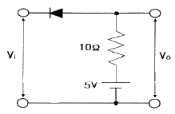
- 2[V]
- 3[V]
- 4[V]
- 5[V]
(정답률: 68%)
13. 다음 중 슈미트 트리거 회로의 응용으로 적합하지 않은 것은?
- 톱니파 발생회로
- 구형파 발생회로
- A-D 변환회로
- 전압비교 회로
(정답률: 64%)
14. 다음과 같은 논리 함수를 구현할 때 최소의 게이트를 사용할 수 있도록 단순화시킨 것으로 맞는 것은?
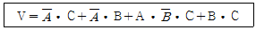
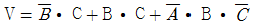
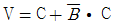
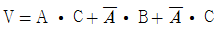
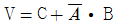
(정답률: 60%)
15. 다음과 같은 파형을 클록(Cp)형 T 플립플롭에 가하였을 때, 출력 파형으로 맞는 것은? (단, T 플립플롭은 상승 엣지(Edge)에서 동작하고 클록이 입력되기 전의 T 플립플롭의 출력은 0이다.)
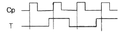
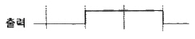
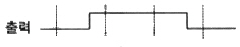
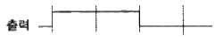
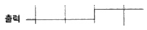
(정답률: 65%)
16. 레지스터 A에 1011101, 레지스터 B에 1101100이 저장되어 있다. 두 수의 EX-OR 연산 결과는?
- 0110001
- 1001100
- 1001110
- 1111101
(정답률: 72%)
17. 다음 중 비동기식 카운터의 플립플롭 구성에 대한 설명으로 틀린 것은?
- 플립플롭 2개를 사용하여 16진 카운터 계수를 나타낸다.
- T 플립플롭으로 구성한다.
- J-K 플립플롭으로 구성할 때 입력 J=K=1로 한다.
- T 플립플롭으로 구성할 때 입력 T=1로 하여 Toggle 상태로 한다.
(정답률: 60%)
18. 다음 중 기억상태를 읽는 동작만 할 수 있는 메모리는?
- ROM
- Address
- RAM
- Register
(정답률: 71%)
19. 다음 그림과 같은 논리 회로는 어떤 기능을 수행하는가?
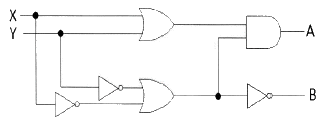
- 일치 회로
- 반가산기
- 전가산기
- 반감산기
(정답률: 83%)
20. 다음 중 비교회로(Comparator)에 대한 설명으로 틀린 것은?
- 2개의 입력을 비교하여 비교한 결과를 출력에 나타내는 회로이다.
- 출력의 종류는 3가지이다.
- 2개의 입력이 같은 값일 때 출력은 배타적 NOR(XNOR)로 표시된다.
- 2개의 입력이 다른 값일 때 출력은 배타적 OR(XOR)로 표시된다.
(정답률: 56%)
2과목: 정보통신기기
21. 정보통신 시스템에서 데이터 전송 시에 발생하는 에러의 검출, 정정 등을 담당하는 장치는?
- 전송 제어 장치
- 회선 제어 장치
- 신호 제어 장치
- 중앙 처리 장치
(정답률: 79%)
22. DTE와 DCE를 상호 연결하기 위해 기계적, 전기적, 기능적, 절차적인 조건들을 표준화한 것은?
- 토폴로지
- DCC 아키텍처
- DTE/DCE 인터페이스
- 참조 모형
(정답률: 90%)
23. 다음 중 정보 단말기의 기능에 속하지 않는 것은?
- 송ㆍ수신 제어 기능
- 출력 변환 기능
- 에러 제어 기능
- 다중화 기능
(정답률: 77%)
24. 모뎀의 기능 중에서 디지털신호가 '1'이나 '0'이 계속되는 것을 방지하는 것은?
- 스크램블 기능
- 타이밍 기능
- 등화 기능
- 테스트 기능
(정답률: 89%)
25. 다음 중 DSU의 기능이 아닌 것은?
- 신호 파형의 변환
- 신호 전송 속도의 변환
- 제어 신호의 삽입
- 에러 검출 및 정정
(정답률: 77%)
26. 다음 중 PSTN의 전송구간에서 신호가 바르게 된 것은?
- 컴퓨터 → 모뎀 : 아날로그 신호
- 모뎀 → 모뎀 : 디지털 신호
- 모뎀 → 컴퓨터 : 디지털 신호
- 컴퓨터 → 컴퓨터 : 아날로그 신호
(정답률: 70%)
27. 비트 단위의 다중화에 사용되고, 시간 슬롯이 낭비되는 경우가 많이 발생하는 다중화는?
- 주파수 분할 다중화
- 동기식 시분할 다중화
- 비동기식 시분할 다중화
- 코드 분할 다중화
(정답률: 73%)
28. 다음 중 OSI Layer 계층과 네트워크 기기 간의 연결이 올바른 것은?
- Transfer Layer - Repeater
- Network Layer - Hub
- Data Layer - Bridge
- Physical Layer - Router
(정답률: 86%)
29. 네트워크 장비 중 경로 결정(Path Determination)과 스위칭(Switching) 기능을 가진 장비는?
- 허브(Hub)
- 리피터(Repeater)
- 트랜시버(Transceiver)
- 라우터(Router)
(정답률: 86%)
30. 다음 영상통신기기 중 카메라에 사용되는 센서로 노출된 이미지를 전기적인 형태로 바꾸어 전송 또는 저장하는 역할을 담당하는 것은?
- SSD
- CCD
- MHS
- ROM
(정답률: 81%)
31. 디지털 전송방식 중 Run-Length 부호화 방식의 압축률은 얼마인가? (단, 전 화소수 : 200, 부호화 Bit수 : 2)
- 50
- 100
- 200
- 300
(정답률: 86%)
32. 다음 중 VoIP 서비스에 대한 설명으로 잘못된 것은?
- 음성과 데이터를 하나의 망으로 전송한다.
- IP(인터넷 프로토콜)과 연계되어 다양한 부가서비스 제공이 가능하다.
- 기존의 데이터망을 이용하므로 통신요금이 저렴하다.
- 각 통화는 회선을 독점으로 점유하여 대역폭 사용이 비효율적이다.
(정답률: 85%)
33. 다음 중 동영상 압축전송 기술로 디지털 TV 방송 서비스를 지원하지 않는 것은?
- 돌비(Dolby Digital)
- H.264
- MPEG2
- MPEG4
(정답률: 82%)
34. 반파장 다이폴 안테나의 도파기 길이가 15[cm]라 한다면, 이 안테나의 고유주파수는 얼마인가? (단, 전파속도는 3×108[m/sec]로 한다.)
- 0.5[GHz]
- 1[GHz]
- 2[GHz]
- 3[GHz]
(정답률: 74%)
35. 다음 설명에 해당하는 위성서비스는?
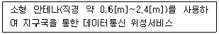
- 디지털 위성서비스
- VSAT 서비스
- 종합디지털 방송(ISDM) 서비스
- GMPCS 서비스
(정답률: 69%)
36. 지구와 정지위성까지의 거리가 약 36,000[km]라고 할 때 지구에서 발사한 전파가 위성에서 중계되어 지구까지 돌아오는 시간은 대략 얼마인가? (단, 위성 중계기 내에서의 지연시간은 무시하고, 전파속도는 3×108[m/sec]로 한다.)
- 120[ms]
- 360[ms]
- 240[ms]
- 180[ms]
(정답률: 83%)
37. 2010년 6월에 발사되어 한반도 주변 기상 및 해양관측, 위성통신 임무를 수행하고 있는 천리안 위성의 궤도는?
- 랜덤 궤도
- 극지 궤도
- 저 궤도
- 정지 궤도
(정답률: 83%)
38. 샤논의 통신용량 공식에서 통신용량은 대역폭에 몇 배 비례하는가?
- 1배
- 1.5배
- 2배
- 3배
(정답률: 87%)
39. 일반적으로 동영상을 자연스럽게 보이기 위해 1초당 몇 개 이상의 프레임을 보여주어야 하는가?
- 1
- 5
- 15
- 30
(정답률: 83%)
40. 다음 중 HDTV의 특징이 아닌 것은?
- 주사선 수가 1,125개이다.
- 화면 종횡비가 9 : 16이다.
- 음성신호 변조가 디지털 방식이다.
- 영상신호 변조방식은 ASK 변조방식이다.
(정답률: 78%)
3과목: 정보전송개론
41. 표본화 주파수가 10[kHz]이고 원신호 파형의 주파수가 1[kHz]라면, 1주기당 PAM 신호는 몇 개인가?
- 1개
- 2개
- 5개
- 10개
(정답률: 84%)
42. 디지털 방송과 휴대 인터넷 등의 고속전송시스템에서 가장 적합한 다중화 방식은?
- STDM
- FDM
- TDM
- OFDM
(정답률: 64%)
43. WDM에서 사용되는 레이저(Laser) 광의 특징이 아닌 것은?
- 고휘도(高輝度)
- 지향성(指向性)
- 열광(熱光)
- 편광현상(偏光現像)
(정답률: 81%)
44. 하나의 광섬유에 다수의 광신호를 전송하기 위해 광신호를 결합하는 수동 광소자는?
- 광감쇠기(Optical Attenuator)
- 광변조기(Optical Modulator)
- 광아이솔레이터(Optical Isolator)
- 광커플러(Optical Coupler)
(정답률: 77%)
45. 5[dBm] 레벨의 신호가 전송 매체상의 A지점, B지점, C지점을 거쳐서 D지점까지 전달되는 경우, A지점-B지점간에서 3[dB]의 손실이 발생하고, B지점-C지점 사이에서는 증폭기가 있어서 7[dB]의 이득이 있고, C지점-D지점간에 3[dB]의 손실이 발생한다면, D지점에서의 신호의 전력 레벨은?
- 0[dBm]
- 1[dBm]
- 3[dBm]
- 6[dBm]
(정답률: 70%)
46. 지상 마이크로파 통신시스템 구성요소가 아닌 것은?
- 변복조 장치
- 광검출기
- 송수신 장치
- 중계 장치
(정답률: 73%)
47. 이동통신망에서 기지국(BS)의 서비스 제공 가능지역(Service Coverage)을 확대하는 방법으로 알맞지 않은 것은?
- 기지국(BS)의 송신 출력을 높인다.
- 기지국(BS)의 안테나 높이를 증가시킨다.
- 중계기(Repeater)나 반사기(Reflector)를 사용하여 전파 음영지역(Coverage Hole)을 제거한다.
- 기지국(BS)의 수신기의 수신 한계 레벨(Threshold Sensitivity)를 증가시킨다.
(정답률: 64%)
48. 광섬유에서의 신호원은 무엇인가?
- 빛
- 무선파
- 극초단파
- 초단파
(정답률: 90%)
49. 다음 중 No.7 CCS(Common Channel Signaling)의 장점이 아닌 것은?
- 신호와 이용자 정보의 동시전달이 망 접속의 설정과 동시에 가능, 호 접속 상태와 무관하므로 통화 중에도 신호전송이 가능하다.
- 통화로와 신호로가 개별회선에 중첩되는 방식으로 전송로 사용이 효율적이다.
- 새로운 서비스와 부가 서비스의 도입을 포함하는 새로운 요구에 대해서 커다란 유연성을 갖는다.
- 단일 64[kbps] 채널로 거의 1,000개 이상의 이용자 정보 채널을 동시에 제어할 수 있는 집중화된 신호장비를 사용하기 때문에 개별 채널 방식에 비해 경제적이다.
(정답률: 53%)
50. 다음 중 동기식 전송방식이 아닌 것은?
- 비트 동기방식
- 문자 동기방식
- 스트로브 동기방식
- 프레임 동기방식
(정답률: 80%)
51. HDLC(High-Level Data Link Control) 프로토콜의 전송방식은?
- 문자(중심)방식
- 바이트(중심)방식
- 비트(중심)방식
- 혼합동기방식
(정답률: 80%)
52. 문자 동기 전송방식에서 SYN 문자의 기능은?
- 수신측이 문자 동기를 맞추도록 한다.
- 데이터의 완료를 표시한다.
- 데이터의 시작을 표시한다.
- 질의가 끝났음을 알린다.
(정답률: 84%)
53. OSI 모델의 7계층 중 암호화 및 데이터 압축 등을 수행하는 계층은?
- 응용 계층
- 표현 계층
- 전송 계층
- 세션 계층
(정답률: 79%)
54. 다음 중 비트방식의 데이터링크 프로토콜이 아닌 것은?
- SDLC
- HDLC
- BSC
- LAP-B
(정답률: 77%)
55. 인터넷망에서 노드 역할을 하고 있는 Router의 기능은 OSI 7 Layer의 참조모델에서 보면, 어떤 계층의 기능을 주로 수행하는가?
- 데이터링크 계층
- 네트워크 계층
- 전송 계층
- 응용 계층
(정답률: 74%)
56. TCP(Transmission Control Protocol)를 사용하는 애플리케이션과 잘 알려진 서버포트 번호연결이 잘못된 것은?
- Telnet - 23
- SMTP - 25
- FTP - 18
- HTTP - 80
(정답률: 76%)
57. IP address 체계의 C class의 기본 서브넷 마스크에 해당하는 것은?
- 255.0.0.0
- 255.255.0.0
- 255.255.255.0
- 255.255.255.255
(정답률: 88%)
58. IPv6의 주소체계는 몇 비트로 구성되어 있는가?
- 32
- 48
- 64
- 128
(정답률: 84%)
59. 다음 중 ARQ의 종류가 아닌 것은?
- Stop-and-Wait ARQ
- Go-back-N ARQ
- Pre-emptive ARQ
- Selective repeat ARQ
(정답률: 70%)
60. 두 부호어의 비트열이 A=(100100), B=(010100)일 때 두 부호어의 해밍거리는 얼마인가?
- 1
- 2
- 3
- 4
(정답률: 82%)
4과목: 전자계산기일반 및 정보설비기준
61. 컴퓨터의 연산장치에서 산술ㆍ논리 연산 결과를 일시적으로 보관하는 장치는?
- 누산기(Accumulator)
- 데이터 레지스터(Data Register)
- 감산기(Substracter)
- 상태 레지스터(Status Register)
(정답률: 70%)
62. 주기억장치의 용량이 512[kbyte]인 컴퓨터에서 32비트의 가상주소를 사용하고, 페이지의 크기가 4[kbyte]면 주기억장치의 페이지 수는 몇 개인가?
- 32
- 64
- 128
- 512
(정답률: 82%)
63. 데이터의 일부분이나 전체를 지우고자 할 때 사용되는 연산은?
- OR
- AND
- MOVE
- Complement
(정답률: 68%)
64. 컴퓨터 운영체제에서 커널의 코드를 실행하기 위해 커널의 특정 루틴을 호출하는 것을 무엇이라 하는가?
- 생성상태(Created State)
- 스케줄(Schedule)
- 관리자호출(Supervisor Call)
- 대기상태(Wake Up)
(정답률: 74%)
65. 다음 중 컴파일러와 인터프리터에 대한 비교 설명으로 틀린 것은?
- 컴파일러는 목적 프로그램을 생성하고, 인터프리터는 생성하지 않는다.
- 컴파일러는 전체 프로그램을 한꺼번에 처리하고, 인터프리터는 대화식인 행 단위로 처리한다.
- 컴파일러는 실행속도가 느리고, 인터프리터는 빠르다.
- 인터프리터는 BASIC, LISP 등이 있고, 컴파일러는 COBOL, C, C# 등이 있다.
(정답률: 75%)
66. 다음 중 마이크로프로세서 내부구조에 대한 설명으로 옳은 것은?
- 프로그램 카운터 : 프로그램메모리의 어느 위치에 있는 명령어를 수행할 것인가를 나타낸다.
- 명령어 레지스터 : 프로그램 카운터의 값을 변경한다.
- 해독장치 : 명령어를 지정한다.
- 타이밍 발생기 : 다음 명령어의 위치를 가리킨다.
(정답률: 76%)
67. 다음 중 인터럽트의 발생원인이 아닌 것은?
- 전원 이상
- 오퍼레이터 조작 또는 타이머
- 서브 프로그램 호출
- 제어감시(SVC)
(정답률: 54%)
68. 다음 보기는 운영체제의 어떤 자원관리기능에 대한 설명인가?
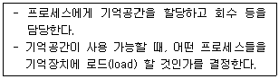
- 디스크 관리 기능
- 입출력 장치 관리 기능
- 프로세스 관리 기능
- 기억장치 관리 기능
(정답률: 74%)
69. 컴퓨터 언어에서 미리 정의한 자료의 형태를 기본 자료형이라 하는데 그 종류에 포함되지 않는 것은?
- 배열형
- 문자형
- 정수형
- 실수형
(정답률: 76%)
70. 마이크로컴퓨터의 명령어수가 126개라면 OP Code는 몇 비트인가?
- 5비트
- 6비트
- 7비트
- 8비트
(정답률: 79%)
71. 다음 정보통신설비공사 중 '통신선로설비 공사'에 해당되지 않는 것은?
- 지능망설비 공사
- 통신케이블설비 공사
- 통신관로설비 공사
- 통신구설비 공사
(정답률: 83%)
72. 정보통신공사업자의 공사시공능력 평가항목과 관계가 없는 것은?
- 정보통신분야 국가기술자격자 보유 현황
- 공사실적, 자본금, 기술력
- 공사품질의 신뢰도
- 공사 품질관리수준
(정답률: 66%)
73. 다음 중 정보통신공사의 하자담보 책임기간이 다른 하나는?
- 터널식 통신구공사
- 전송설비공사
- 교환기설치공사
- 위성통신설비공사
(정답률: 79%)
74. 다음 중 정보통신공사업자의 변경신고사항에 해당되지 않는 것은?
- 영업소 소재지의 변경
- 상호 또는 명칭의 변경
- 사무실 면적의 변경
- 자본금의 변동
(정답률: 66%)
75. 다음 문장의 괄호 안에 들어갈 내용을 순서대로 바르게 나타낸 것은?
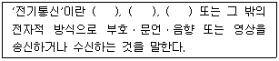
- 인터넷, 무선, 위성
- 데이터, 무선, 위성
- 발진, 변조, 복조
- 유선, 무선, 광선
(정답률: 85%)
76. 다음 중 전기통신사업법에서 규정하는 보편적 역무의 내용이 아닌 것은?
- 유선전화 서비스
- 긴급통신용 전화서비스
- 고령층 대상 전화서비스
- 저소득층에 대한 요금감면 전화서비스
(정답률: 79%)
77. 다음 문장의 괄호 안에 들어갈 내용으로 적합한 것은?
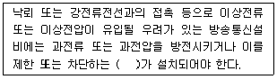
- 보호기
- 증폭기
- 변조기
- 유도기
(정답률: 89%)
78. 전기통신을 효율적으로 관리하고 그 발전을 촉진하기 위한 목적으로 전기통신에 관한 기본적인 사항을 규정하고 있는 법률은?
- 전기통신사업법
- 전기통신기본법
- 정보통신공사업법
- 정보화촉진기본법
(정답률: 81%)
79. 사업자의 교환설비로부터 이용자 방송통신설비의 최초 단자에 이르기까지의 사이에 구성되는 회선을 무엇이라 하는가?
- 국선
- 내선
- 전송회선
- 통신채널
(정답률: 81%)
80. 다음 중 정보통신공사시 '감리'의 역할이 아닌 것은?
- 설계도서에 의해 시공되는 지 감독
- 관련규정에 의해 시공되는 지 감독
- 품질관리에 대한 지도
- 도급관리에 대한 지도
(정답률: 66%)